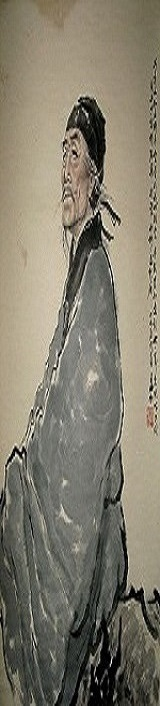
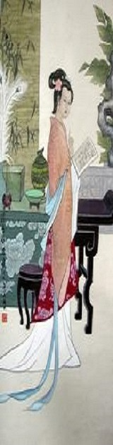
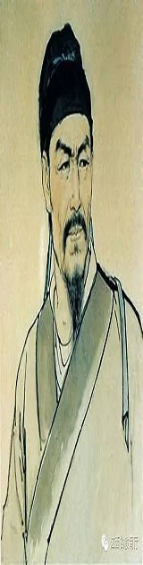

唐诗简介
唐诗是汉民族最珍贵的文化遗产，是汉文化宝库中的一颗明珠，同时也对周边民族和国家的文化发展产生了很大影响。唐代被视为中国各朝代旧诗最丰富的朝代，因此有唐诗、宋词之说。大部分唐诗都收录在《全唐诗》中，自唐朝开始，有关唐诗的选本不断涌现，而流传最广的当属蘅塘退士编选的《唐诗三百首》。按照时间，唐诗的创作分四个阶段初唐、盛唐、中唐、晚唐。唐代的诗人特别多。李白、杜甫、白居易固然是世界闻名的伟大诗人，除他们之外，还有其他无数诗人，象满天的星斗一样。这些诗人，今天知名的就还有二千三百多人。他们的作品，保存在《全唐诗》中的也还有四万八千九百多首。唐诗的题材非常广泛。有的从侧面反映当时社会的阶级状况和阶级矛盾，揭露了封建社会的黑暗；有的歌颂正义战争，抒发爱国思想；有的描绘祖国河山的秀丽多娇；此外，还有抒写个人抱负和遭遇的，有表达儿女爱慕之情的，有诉说朋友交情、人生悲欢的等等。总之从自然现象、政治动态、劳动生活、社会风习，直到个人感受，都逃不过诗人敏锐的目光，成为他们写作是题材。在创作方法上，既有现实主义的流派，也有浪漫主义的流派，而许多伟大的作品，则又是这两种创作方法相结合的典范，形成了我国古典诗歌的优秀传统。

宋词简介


宋词是一种新体诗歌，宋代盛行的一种汉族文学体裁，标志宋代文学的最高成就。宋词句子有长有短，便于歌唱。因是合乐的歌词，故又称曲子词、乐府、乐章、长短句、诗余、琴趣等。始于汉，定型于唐、五代，盛于宋。宋词是中国古代汉族文学皇冠上光辉夺目的明珠，在古代汉族文学的阆苑里，她是一座芬芳绚丽的园圃。她以姹紫嫣红、千姿百态的神韵，与唐诗争奇，与元曲斗艳，历来与唐诗并称双绝，都代表一代文学之盛。后有同名书籍《宋词》。
版权所有2016-2017
Copyright © 2016-2017 github.com/limihao1998/Web1 All Rights Reserved